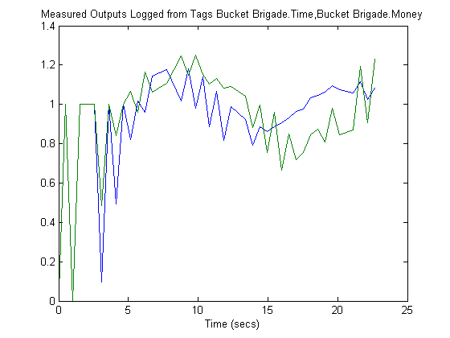

On-Line Implementation of MPC Using OPC Toolbox™
This demo (Windows(R) only) implements an MPC object as an online control application using the OPC client supplied with OPC Toolbox™. The demo uses the (free) Matrikon™ Simulation OPC server to simulate the behavior of an industrial process.
Contents
- Download the Matrikon™ OPC Simulation Server from "www.matrikon.com"
- Establish a Connection to the OPC Server
- Set up the Plant OPC I/O
- Specify the MPC Controller Which Will Control the Simulated Plant
- Build the OPC I/O for the MPC Controller
- Build OPC Groups to Trigger Execution of the Plant Simulator & Controller
- Log Data From the Plant Measured Outputs
- Extract and Plot the Logged Data
Download the Matrikon™ OPC Simulation Server from "www.matrikon.com"
Download and install the server and set it running either as a service or as an application. Note that this demo requires OPC Toolbox™.
Establish a Connection to the OPC Server
if ~mpcchecktoolboxinstalled('opc') disp('The demo requires OPC Toolbox™') return end try opcreset % Clear any existing opc connections. clear mpcopcPlantStep; % Flush the callback persistent variables. clear mpcopcMPCStep; h = opcda('localhost','Matrikon.OPC.Simulation.1'); connect(h); catch ME disp('The Matrikon™ OPC Simulation Server must be running on the local machine') return end
Set up the Plant OPC I/O
In practice the plant would be a physical process, and the OPC tags which define its I/O would already have been created on the OPC server. However, since in this case a simulation OPC server is being used, the plant behavior must be simulated. This is achieved by defining tags for the plant manipulated and measured variables and creating a callback (mpcopcPlantStep) to simulate plant response to changes in the manipulated variables. Two OPC groups are required, one to represent the two manipulated variables to be read by the plant simulator and another to write back the two measured plant outputs storing the results of the plant simulation.
% Build an opc group for 2 plant inputs and initialize them to zero. plant_read = addgroup(h,'plant_read'); imv1 = additem(plant_read,'Bucket Brigade.Real8', 'double'); writeasync(imv1,0); imv2 = additem(plant_read,'Bucket Brigade.Real4', 'double'); writeasync(imv2,0); % Build an opc group for plant outputs. plant_write = addgroup(h,'plant_write'); opv1 = additem(plant_write,'Bucket Brigade.Time', 'double'); opv2 = additem(plant_write,'Bucket Brigade.Money', 'double'); set(plant_write,'WriteAsyncFcn',[]) % Suppress command line display. % Create plant model. plant_model = ss([-.2 -.1; 0 -.05],eye(2,2),eye(2,2),zeros(2,2)); disc_plant_model = c2d(plant_model,1);
Specify the MPC Controller Which Will Control the Simulated Plant
We assume no model mismatch, a control horizon 6 samples and prediction horizon 20 samples
mpcobj = mpc(disc_plant_model,1); set(mpcobj,'P',20,'ControlHorizon',6); mpcobj.weights.ManipulatedVariablesRate = [1 1]; % Build an internal MPC object structure so that the MPC object % is not rebuilt each callback execution. state = mpcstate(mpcobj); y1 = mpcmove(mpcobj,state,[1;1]',[1 1]');
-->No value for PredictionHorizon supplied. Trying PredictionHorizon=10. -->No ControlHorizon specified. Assuming ControlHorizon=2 -->No Weights.ManipulatedVariables specified, assuming default 0.00000 -->No Weights.ManipulatedVariablesRate specified, assuming default 0.10000 -->No Weights.OutputVariables specified, assuming default 1.00000 -->Integrated white noise added on measured output channel #1 -->Integrated white noise added on measured output channel #2 -->No Model.Noise specified, assuming white noise on each measured output channel
Build the OPC I/O for the MPC Controller
Build two OPC groups, one to read the two measured plant outputs and the other to write back the two manipulated variables.
% Build an opc group for MPC inputs. mpc_read = addgroup(h,'mpc_read'); impcpv1 = additem(mpc_read,'Bucket Brigade.Time', 'double'); writeasync(impcpv1,0); impcpv2 = additem(mpc_read,'Bucket Brigade.Money', 'double'); writeasync(impcpv2,0); impcref1 = additem(mpc_read,'Bucket Brigade.Int2', 'double'); writeasync(impcref1,1); impcref2 = additem(mpc_read,'Bucket Brigade.Int4', 'double'); writeasync(impcref2,1); % Build an opc group for mpc outputs. mpc_write = addgroup(h,'mpc_write'); additem(mpc_write,'Bucket Brigade.Real8', 'double'); additem(mpc_write,'Bucket Brigade.Real4', 'double'); set(mpc_write,'WriteAsyncFcn',[]); % Suppress command line display.
Build OPC Groups to Trigger Execution of the Plant Simulator & Controller
Build two opc groups based on the same external opc timer to trigger execution of both plant simulation and MPC execution when the contents of the OPC time tag changes
gtime = addgroup(h,'time'); time_tag = additem(gtime,'Triangle Waves.Real8'); set(gtime,'UpdateRate',1); gtime.DataChangeFcn = {@mpcopcPlantStep plant_read plant_write disc_plant_model}; gmpctime = addgroup(h,'mpctime'); additem(gmpctime,'Triangle Waves.Real8'); set(gmpctime,'UpdateRate',1); gmpctime.DataChangeFcn = {@mpcopcMPCStep mpc_read mpc_write mpcobj};
Log Data from the Plant Measured Outputs
Log the plant measured outputs from tags 'Bucket Brigade.Money' and 'Bucket Brigade.Money'
set(mpc_read,'RecordsToAcquire',40); start(mpc_read); while mpc_read.RecordsAcquired < mpc_read.RecordsToAcquire pause(3) fprintf('Logging data: Record %d / %d',mpc_read.RecordsAcquired,... mpc_read.RecordsToAcquire) end stop(mpc_read);
Logging data: Record 5 / 40 Logging data: Record 10 / 40 Logging data: Record 15 / 40 Logging data: Record 20 / 40 Logging data: Record 25 / 40 Logging data: Record 31 / 40 Logging data: Record 36 / 40 Logging data: Record 40 / 40
Extract and Plot the Logged Data
[itemID, value, quality, timeStamp, eventTime] = getdata(mpc_read,'double'); plot((timeStamp(:,1)-timeStamp(1,1))*24*60*60,value) title('Measured Outputs Logged from Tags Bucket Brigade.Time,Bucket Brigade.Money') xlabel('Time (secs)'); %opcreset